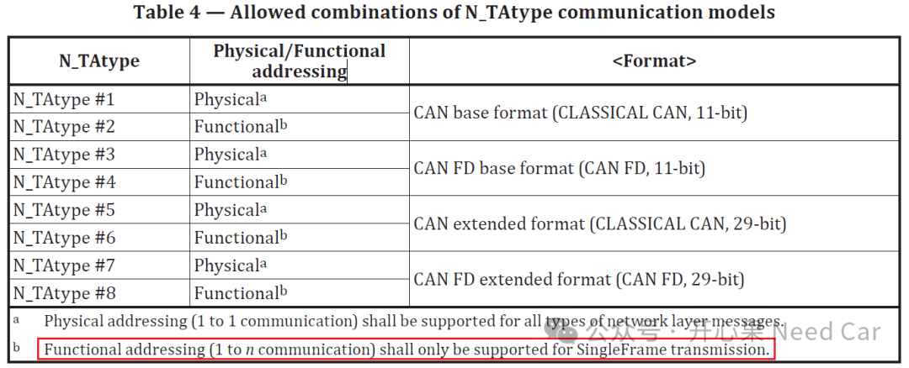
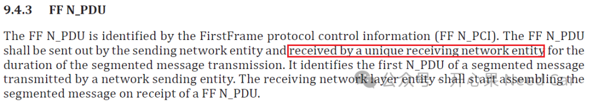
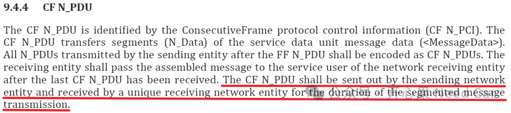

开心果 Need Car · 2026-03-31T06:21:00+08:00 · 微信原文
1.规范对功能寻址的约束
工程问题中，没有绝对的对与错，达成项目目标是不同角色参与者的共同目标。对于项目实施过程中问题采取的方案，需要有理有据的实施，当然，客户需求是第一参考要素，通用规范辅助参考 。那么，对于功能寻址（Functional addressing）仅用于单帧（SingleFrame）传输这一诉求从哪里查证呢？
在规范“15765-2”部分，Table 4给出了具体的约束，具体要求如下：

同时，规范对于首帧（FF，Frist Frame）的接收也做了明确的要求，分段传输中，首帧的接收必须由唯一的网络接收实体接收（a unique receiving network entity），示意如下：

也就是说：First Frame是多帧传输的起点，必须建立一个确定的、唯一的1→1通道，接收者必须从FF开始直到最后一个（CF，Consecutive Frame，连续帧）全程独占该数据链路。所以，功能寻址属于1对N的范畴，显然，不能使用功能寻址发送首帧（应当使用物理寻址）。
同样的，规范对于连续帧（CF，Consecutive Frame）的要求如下：

简单理解： 在整个分段（多帧）消息传输期间，必须由发送方发出，并且只能由唯一的一个接收方接收。
2.工程应用需注意
然而，在工程项目中，有些诊断服务会要求支持功能寻址。如果要求支持功能寻址就需要考虑这条需求。避免开发或者测试过程中的理解偏差。
多帧传输流程涉及 FF→FC→CF 的状态机控制，需要接收者提供连续、唯一、同步的FlowControl 信息。如果多个ECU 同时作为接收者，会同时发送FC（Flow Control），导致总线竞争和逻辑混乱，因此标准要求整个多帧传输必须为点对点链路（1→1），并严格禁止功能寻址（1→N）参与多帧过程。
功能寻址是广播式传输（1→N），无法进行 FlowControl 处理，也不能唯一确认FF/CF（Consecutive Frame，连续帧）的接收者，因此根据 ISO 15765‑2 明确规定，功能寻址只能发送单帧，任何功能寻址的FirstFrame都必须被忽略。
往期精彩回顾